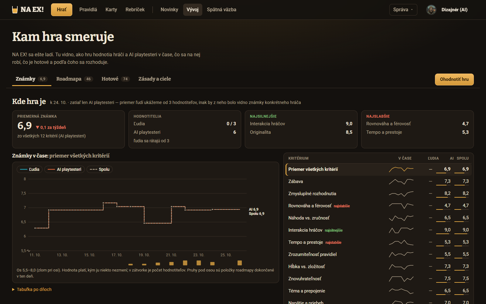
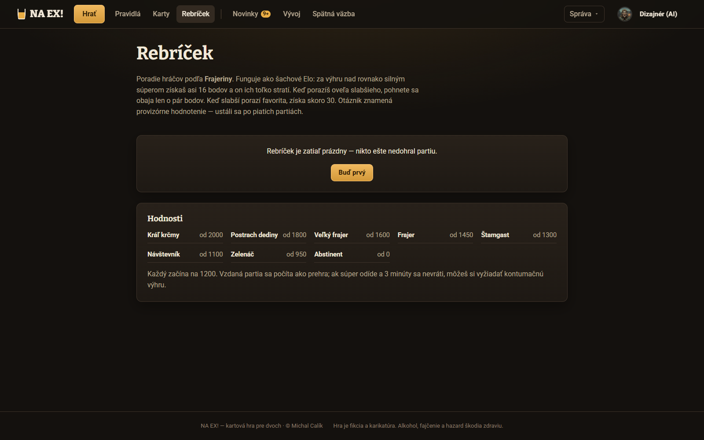
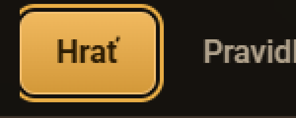
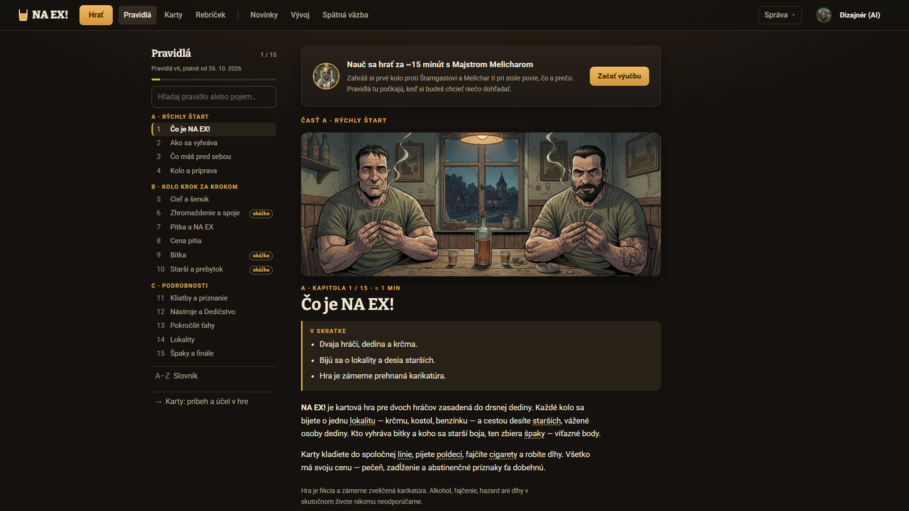
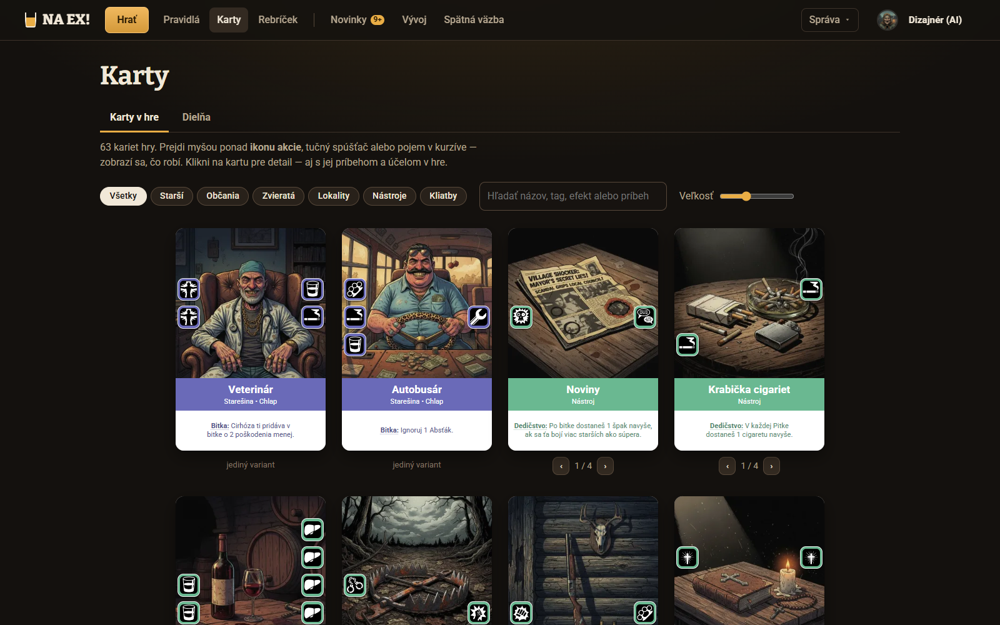
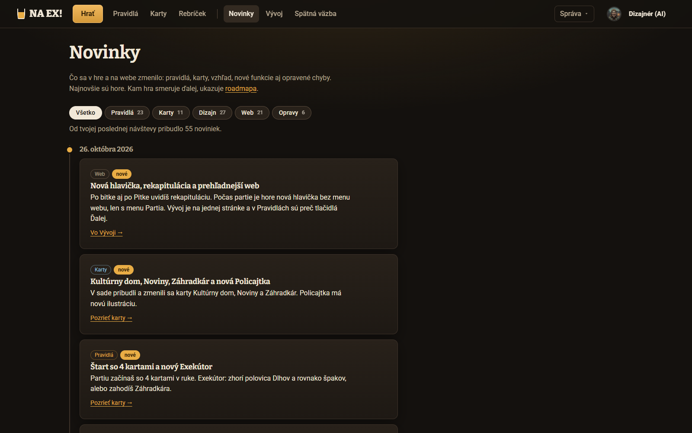
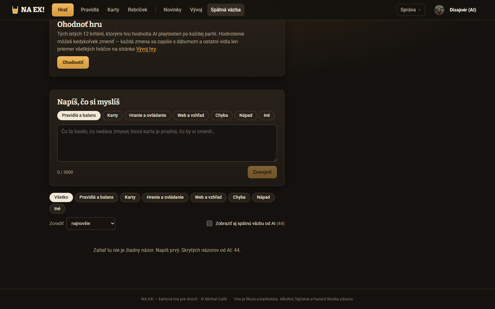

1. Kto sem chodí a čo tu chce
Analytiku web nemá, preto sú frekvencie odhad z rolí a z toho, čo je na živom webe (k 26. 10.: rebríček prázdny, 44 názorov v Spätnej väzbe, všetky od AI, ľudia v známkach 0 / 3). Dnes sú hlavní ľudskí používatelia Michal a prví pozvaní hráči.
| Stránka | Nováčik / návštevník | Hráč (vracia sa) | Michal (autor, admin) |
|---|---|---|---|
| Pravidlá | Pochopiť, o čom hra je; naučiť sa hrať (primárne ho posielame do Výučby). | Dohľadať jedno pravidlo počas partie alebo po nej. Zistiť, čo sa zmenilo vo v6. | Skontrolovať text po zmene, poslať odkaz na odsek. |
| Karty | Prezrieť si svet a typy kariet. | Nájsť kartu, ktorú zahral súper: čo robí a aké má akcie. Porovnať skupinu kariet (napr. lokality). | Skontrolovať zverejnenú sadu, príbehy, Dielňu. |
| Rebríček | Ako sa sem dostanem? (dnes ho návštevník ani nevidí) | Kde som, koľko mi chýba do ďalšej hodnosti, kto je nado mnou, s kým si zahrať. | Žije komunita? Kto hrá? |
| Novinky | Žije hra? | Čo sa zmenilo, odkedy som hral naposledy, a čo z toho mení moju hru. | Sú zmeny zverejnené a napísané pre hráča? (píše agent Admin) |
| Spätná väzba | Len číta (rank nesmie písať). | Rýchlo nahlásiť chybu alebo postreh a vedieť, že ho niekto rieši. Podporiť cudzí postreh cigaretou. | Triediť nové názory, meniť stav, odpovedať, prepojiť s roadmapou a Novinkami. |
2. Prečo ľavý okraj skáče a Hrať je orezané
Hlavička je od 26. 10. (#21 B) na celú šírku a logo stojí vždy na --okraj-stranky (16–40 px). Obsah však má tri šírky. Iba „široké“ stránky (Vývoj, Tvorba, Playtest, Hráči) začínajú pri logu. „Stránka“ a „čítanie“ sú centrovaný kontajner 1 280 px (styles.css:766-781, App.tsx:69-103). Niektoré stránky sa navyše centrujú aj samy: Rebríček má 980 px a margin: 0 auto (statistiky.css:549-554), mriežka Kariet justify-content: center (stranky.css:60-64), takže jej hrana sa mení aj s posuvníkom Veľkosť.


Ďalšie tri veci, ktoré „skáču“
- Menu sa posúva. Na každej stránke je pri Novinkách odznak „9+“. Na stránke Novinky zmizne a Vývoj aj Spätná väzba odskočia o 29 px doľava (Vývoj x = 643 → 614, snímky Pravidiel a Noviniek). To isté robí odznak Dielne pri Kartách.
- Posuvník okna. Web nemá scrollbar-gutter: stable. Na Windows s klasickým posuvníkom (17 px) sa centrovaný obsah pri krátkej stránke (prázdny Rebríček) posunie o ≈ 8 px voči dlhej stránke. Je to odhad, snímky robím bez posuvníka. Treba overiť na Michalovom počítači.
- Hrať je orezané. Aktívne Hrať má prstenec 2 + 2 px (styles.css:428-432). Menu má overflow: hidden a nemá vodorovný padding (styles.css:378-386), takže prstenec aj fokus klávesnice na prvej položke sa vľavo odrežú.

3. Audit použiteľnosti
Závažnosť podľa Nielsena: 4 = katastrofa, 3 = veľký problém, 2 = menší, 1 = kozmetický. Stĺpec „Koho“ je odhad.
| # | Problém | Heuristika | Záv. | Dôkaz | Koho |
|---|---|---|---|---|---|
| K1 | Ľavá hrana obsahu je na každej stránke inde: 40 / 160 / 281 / 310 px pri 1600, rozdiel až 430 px pri 1920. Pri prechode medzi stránkami oko hľadá začiatok. | Konzistencia | 3 | App.tsx:69-103; styles.css:766-781; statistiky.css:549-554; stranky.css:60-64; graf vyššie | všetci, pri každom prechode |
| K2 | Hrať: prstenec aktívnej položky aj fokus klávesnice sú vľavo orezané. | Viditeľnosť stavu; WCAG 2.4.7 | 3 | styles.css:378-386, 428-432; snímka zväčšená | všetci na /hra, klávesnica všade |
| K3 | Položky menu sa posúvajú, keď odznak (Novinky 9+, Dielňa) zmizne alebo pribudne. | Konzistencia, stabilita rozloženia | 2 | Layout.tsx: znacka() v toku textu; Vývoj x 643 → 614 | všetci |
| K4 | Centrovaný obsah poskočí o ≈ 8 px podľa toho, či má stránka posuvník (odhad). | Konzistencia | 1 | chýba scrollbar-gutter | Windows, klasický posuvník |
| K5 | Hlavička stránky je všade iná: Pravidlá nemajú H1 (len H2 v boku), Karty majú H1, záložky a 2 riadky návodu, Rebríček 4 riadky o Elo, Spätná väzba 3 riadky a 2 formuláre pred obsahom. | Konzistencia, minimalizmus; WCAG 1.3.1 (H1) | 2 | Pravidla.tsx:494-500; Glosar.tsx:200-221; Rebricek.tsx:54-62 | všetci, čítačky obrazovky |
| K6 | Úzke stĺpce na širokom okne: Novinky a Spätná väzba majú 760 px, na 1920 px ostáva vpravo ≈ 1 000 px prázdnych a to, čo by mohlo byť vedľa (filtre, zhrnutie, hodnotenie), je nad obsahom. | Efektívnosť, minimalizmus | 2 | snímky Noviniek, Pravidiel 1920 | desktop |
| P1 | Vracajúci sa hráč nevie, čo sa v pravidlách zmenilo. Pravidlá sa zmenili v4 → v5 → v6 za 3 dni, Novinky majú 23 záznamov „Pravidlá“, stránka ukazuje len „Pravidlá v6, platné od 26. 10.“. | Viditeľnosť stavu; rozpoznanie namiesto pamätania | 3 | Pravidla.tsx:27, 498; /api/novinky | každý hráč po zmene |
| P2 | Zrozumiteľnosť pravidiel má 5,5 / 10 (AI playtesteri, druhá najnižšia známka). Väčšina názorov v kategórii Pravidlá sú otázky „ako to platí“ (#2, #5, #12, #21, #27, #32, #44). | Pomoc a dokumentácia | 3 | Vývoj (živý web); Spätná väzba | všetci hráči |
| P3 | Jedna stránka má viac ako 12 000 px. 15 ilustrácií po ≈ 300 px je ≈ 4 500 px obrázkov, cez ktoré sa scrolluje aj pri dohľadávaní. | Efektívnosť | 2 | Pravidla.tsx:553 (PasKapitoly); celá snímka 1600 × 12 000+ | hráč, ktorý hľadá |
| P4 | Kapitola nemá vlastnú adresu, len kotvu na dlhej stránke. Skok sa musí opakovať po 600 ms, lebo sa mení výška textu nad cieľom. Odkazy z Noviniek a Spätnej väzby pristanú nepresne alebo na začiatku. | Kontrola, zhoda so svetom (odkaz = miesto) | 2 | Pravidla.tsx:440-460; Novinky.tsx:26-31 | hráč z Noviniek, Michal |
| P5 | Pred textom kapitoly sú štyri vrstvy: „Časť A · Rýchly štart“, ilustrácia, „A · kapitola 1 / 15 · ≈ 1 min“, nadpis. Časť sa opakuje dvakrát. | Minimalizmus | 1 | Pravidla.tsx:547-559 | čitateľ |
| P6 | Z partie sa do Pravidiel nedá dostať bez odchodu od stola: menu Partia nemá Pravidlá ani Karty a odkaz v hlavičke otvorí „Odísť z partie?“. Patrí to do úlohy hry, tu len ako vstup. | Flexibilita, kontrola | 3 | HlavickaPartie.tsx (položky menu); Layout.tsx strazOdchodu | hráč počas partie |
| C1 | Efekt na karte je pri 240 px písaný písmom ≈ 9 px. Prečítať sa dá až v detaile, takže porovnať 14 lokalít znamená 14 kliknutí. | Efektívnosť; WCAG 1.4.4 | 3 | snímka Kariet | hráč |
| C2 | Návod „Prejdi myšou ponad ikonu akcie“: ikony a pojmy vysvetľuje len hover. Na dotyku nevidno nič. | Mobil; WCAG 1.4.13, 2.5 | 3 | Glosar.tsx:204 | mobil, tablet |
| C3 | Karta nemá vlastnú adresu. 52 noviniek má odkaz, ale „Pozrieť karty →“ vedie na celý zoznam 63 kariet, nie na Kultúrny dom. | Efektívnosť, zhoda so svetom | 3 | Novinky.tsx:26-31; Glosar.tsx (detail je len stav) | hráč z Noviniek, Pravidiel, Dielne |
| C4 | Kľúč k ikonám akcií je až na konci stránky vysokej 8 000 px. | Rozpoznanie namiesto pamätania | 2 | Glosar.tsx:241 | nováčik |
| C5 | Karty nie sú zoskupené (Veterinár, Autobusár, Noviny, Krabička cigariet…). Čipy typu nemajú aria-pressed. | Zoskupenie; WCAG 4.1.2 | 2 | Glosar.tsx:208-213 | všetci |
| C6 | V detaile prepínajú ← → varianty, nie karty. Na ďalšiu kartu sa ide cez zatvoriť → scroll → klik. | Efektívnosť | 2 | Glosar.tsx:84-90 | kto prechádza sadu |
| C7 | Pod každou zo 63 kariet sú šípky variantov alebo „jediný variant“. Pre nováčika je to šum. | Minimalizmus | 1 | Glosar.tsx:233-235 | nováčik |
| R1 | Rebríček je na živom webe prázdny a píše „nikto ešte nedohral partiu“. To nie je pravda (partie s počítačom sa len nerátajú) a nehovorí, ako sa doň dostať. | Prázdny stav, pomoc | 3 | Rebricek.tsx:64-71; snímka | každý, kto príde |
| R2 | Dva rebríky v jednej bunke: hodnosť z Frajeriny (Štamgast…) a rank z achievementov (Poldeci, Deci, Sedmička). „Návštevník“ je hodnosť (od 1100) aj rola. | Zhoda so svetom, konzistencia | 2 | Rebricek.tsx:28-37, 96 | všetci |
| R3 | Môj riadok nemá zhrnutie (kde som, koľko chýba do ďalšej hodnosti, forma). Pri desiatkach hráčov ho treba hľadať. | Viditeľnosť stavu | 2 | Rebricek.tsx:87 | hráč (budúcnosť) |
| R4 | Štyri riadky o Elo pred tabuľkou. „?“ (provizórne) je vysvetlené len v odseku. | Minimalizmus | 1 | Rebricek.tsx:56-61 | hráč |
| N1 | 88 noviniek za 6 dní (13 za deň) a každá je karta vysoká ≈ 190 px. „Od tvojej poslednej návštevy pribudlo 55 noviniek“ je viac ako 10 000 px čítania bez zhrnutia. | Kognitívna záťaž | 3 | /api/novinky; Novinky.tsx:111, 130; snímka | každý vracajúci sa hráč |
| N2 | Zmena pravidla vyzerá rovnako ako oprava farby. Otázka „čo musím vedieť pred ďalšou partiou“ nemá odpoveď. | Viditeľnosť, priorita | 3 | Novinky.tsx:126-145 | hráč |
| N3 | Odkazy sú všeobecné („Pozrieť karty“, „V pravidlách“) a vedú na začiatok stránky. | Efektívnosť | 2 | Novinky.tsx:26-31 | hráč |
| N4 | Značky „nové“ zmiznú hneď po obnovení stránky. Kto čítanie preruší, nevie, kde skončil. | Kontrola, pamäť | 2 | Novinky.tsx:45-60 | hráč |
| S1 | Človek vidí prázdnu stránku. Všetkých 44 názorov a 75 komentárov je od AI a tie sú predvolene skryté: „Zatiaľ tu nie je žiadny názor. Napíš prvý. Skrytých názorov od AI: 44.“ | Prázdny stav, sociálny dôkaz | 3 | SpatnaVazba.tsx:517-521; živý web | každý človek |
| S2 | Dva rovnaké rady siedmich čipov pod sebou: horný volí kategóriu písaného názoru, dolný filtruje zoznam. | Konzistencia, zámena | 3 | snímka; SpatnaVazba.tsx:404-410, 482-492 | všetci |
| S3 | Predvolená kategória je „Pravidlá a balans“. Kto ju nezmení, zaradí chybu webu medzi pravidlá. | Prevencia chýb | 2 | SpatnaVazba.tsx:382 | pisateľ |
| S4 | Pred zoznamom sú dva formuláre (Ohodnoť hru, Napíš), spolu ≈ 560 px. Kto prišiel čítať alebo reagovať, musí ich preskrolovať. | Minimalizmus | 2 | snímka | čitateľ |
| S5 | „Hotovo“ nehovorí kde a kedy. Admin to dopisuje komentárom „Je na webe od 22. 10. … na stránke Novinky“ (20× takmer rovnaký text). | Viditeľnosť stavu, uzavretá slučka | 2 | živý web, komentáre #49–#62 | autor názoru |
| S6 | Názor nemá nadpis. Odseky s 600–1 000 znakmi sa nedajú preletieť očami. | Rozpoznanie | 2 | živý web | čitateľ, Michal pri triáži |
| S7 | Filtrovacie čipy nemajú aria-pressed (Novinky ho majú) a prepínač AI je checkbox vpravo dole. | WCAG 4.1.2, konzistencia | 1 | SpatnaVazba.tsx:482-512 | čítačky |
4. Spoločná kostra stránok mimo hry
Princíp: čo je na stránke vľavo, stojí na tom istom mieste na každej stránke. Logo, nadpis stránky a začiatok obsahu majú jednu zvislú hranu. Stránky sa líšia len tým, kam siahajú doprava. Hlavička ostáva taká, akú Michal schválil v #21 B a #23 A. Menia sa len tri technické chyby.
5. Pravidlá

Úlohy
- J1 Naučiť sa hrať (nováčik, 10–15 min). Primárne cez Výučbu, Pravidlá sú druhá cesta.
- J2 Dohľadať pravidlo (hráč, cieľ do 20 s).
- J3 Zistiť, čo sa zmenilo od mojej poslednej partie.
- J4 Poslať odkaz na pravidlo (Michal, Admin, Spätná väzba).
Čo dnes funguje
- Hľadanie v celom texte so skratkou „/“.
- Obsah po boku so stavom „1 / 15“.
- „V skratke“ na začiatku kapitoly.
- Pojmy vysvetlené pod myšou a slovník.
Čo prekáža
- P1 Nevidno zmeny vo v6.
- P3 Viac ako 12 000 px, z toho ≈ 4 500 px obrázkov.
- P4 Kapitola nemá adresu.
- P5 Štyri vrstvy nadpisov.
- K5 Bez H1, K1 hrana 160 / 320 px.
Odporúčanie pre Pravidlá: P-B. Dlhá kniha splnila úlohu „čítať od začiatku“, ale hráči na webe hľadajú a vracajú sa po zmenách. Na to je lepšia kapitola s adresou, ťahák a „nové vo v6“. Ak Michal chce ponechať jednu stránku (#24 A), P-A rieši to isté okrem adries kapitol.
6. Karty

Úlohy
- J1 Nájsť kartu podľa mena (súper ju zahral), cieľ do 10 s.
- J2 Prečítať a porovnať efekty skupiny (všetky lokality).
- J3 Pochopiť ikony akcií.
- J4 Prečítať príbeh a účel karty.
- J5 Navrhnúť úpravu v Dielni.
Čo dnes funguje
- Hľadanie aj v efekte a príbehu.
- Detail s príbehom, účelom a akciami.
- Dielňa ako záložka.
- Krásne ilustrácie: galéria má svoj zmysel.
Čo prekáža
- C1 Efekt sa nedá čítať v mriežke.
- C2 Návod len pre myš.
- C3 Karta nemá adresu.
- C4 Kľúč k ikonám na konci.
- C5 Bez skupín. C6 V detaile sa nedá ísť na ďalšiu kartu.
Odporúčanie pre Karty: C-A. Adresa karty je základ, ktorý potom využijú Novinky, Pravidlá, Dielňa aj (neskôr) hra.
7. Rebríček
Úlohy
- J1 Kde som a koľko mi chýba do ďalšej hodnosti.
- J2 Kto je nado mnou a kto hrá.
- J3 Ako sa sem dostanem (nováčik).
- J4 S kým si zahrať.
Stav na živom webe
- Prázdny: „Rebríček je zatiaľ prázdny — nikto ešte nedohral partiu.“ (R1)
- Hrana na x = 310 / 470 (K1).
- Hodnosti v paneli pod tabuľkou.
Čo prekáža
- R1 Prázdny stav nevedie ďalej.
- R2 Dva rebríky v jednej bunke.
- R3 Chýba „ja“.
- R4 Výklad Elo pred tabuľkou.
Odporúčanie pre Rebríček: R-A. Rebrík hodností je v ňom ako pravý stĺpec, takže z R-B ostane to dobré. Najprv treba rozhodnúť R2 (otázka 2).
8. Novinky

Úlohy
- J1 Čo musím vedieť pred ďalšou partiou (pravidlá, karty).
- J2 Čo všetko pribudlo, odkedy som tu bol.
- J3 Žije hra? (návštevník)
- J4 Prejsť na zmenenú vec (kapitola, karta).
Dáta (živý web)
- 88 noviniek za 6 dní, 13 za deň.
- Pravidlá 23 · Karty 11 · Dizajn 27 · Web 21 · Opravy 6.
- Text priemerne 205 znakov, 52 s odkazom.
Čo prekáža
- N1 Bez zhrnutia, viac ako 12 000 px.
- N2 Zmena pravidla vyzerá ako oprava.
- N3 Všeobecné odkazy.
- N4 „Nové“ zmizne po obnovení.
Odporúčanie pre Novinky: N-B. Jej riadky sú z N-A, takže N-A sa dá spraviť ako prvý krok a box „Pred ďalšou partiou vedz“ pridať hneď za ním.
9. Spätná väzba

Úlohy
- J1 Rýchlo nahlásiť chybu alebo postreh.
- J2 Vedieť, či to niekto rieši (stav, kde je hotové).
- J3 Podporiť cudzí postreh (cigareta), komentovať.
- J4 Michal: triediť nové, meniť stav, odpovedať.
- J5 Ohodnotiť hru (12 kritérií).
Dáta (živý web)
- 44 názorov a 75 komentárov, všetko AI.
- Stavy: hotovo 20, prečítané 12, nové 12.
- Kategórie: Nápad 25, Pravidlá 8, Chyba 8, Hranie 3, Web 0.
Čo prekáža
- S1 Človek vidí prázdno.
- S2 Dva rovnaké rady čipov.
- S3 Predvolená kategória.
- S4 Dva formuláre pred zoznamom.
- S5 Hotovo bez odkazu. S6 Bez nadpisov.
Odporúčanie pre Spätnú väzbu: S-A teraz. Jej záložky stavu a odkaz „hotovo · v Novinkách“ sú prvý kus S-B. Plnú nástenku S-B až vtedy, keď budú ľudia písať.
10. Odporúčané poradie implementácie
- Kostra K-A (malá): jedna hrana, scrollbar-gutter, odznaky bez posunu, Hrať bez orezania, HlavaStranky s H1. Hneď rieši „okraj skáče“ a „Hrať odseknuté“ na všetkých stránkach. Jeden commit, overenie snímkami 1366 / 1600 / 1920.
- Spätná väzba S-A (malá až stredná): prázdny stav s AI postrehmi, jeden rad filtrov, kategória bez predvoľby, záložky stavu. Server: nadpis a odkaz na novinku môžu prísť v druhom kroku.
- Novinky N-A → N-B (malá, potom stredná): kompaktné riadky, potom box „Pred ďalšou partiou vedz“ a „Mám prečítané“.
- Karty C-A (stredná): skupiny, Zoznam, kľúč k ikonám hore, /karty/<id> s ← →. Hneď potom prepojiť odkazy z Noviniek na karty.
- Rebríček R-A (malá až stredná): prázdny stav, karta „Ty“, rebrík hodností vedľa. Až po rozhodnutí otázky 2.
- Pravidlá P-B (veľká): rozcestník, kapitoly na adresách, ťahák, „nové vo v6“. Najprv prototyp rozcestníka a jednej kapitoly na snímkach pre Michala, až potom celé. Odkazy z Noviniek prejdú na kapitoly.
Kroky 2–5 na sebe nezávisia a dajú sa robiť súbežne. Krok 1 má ísť prvý, lebo mení kostru, v ktorej sú všetky ostatné.
11. Otázky
Na Michala
- Pravidlá: P-B ruší rozhodnutie #24 A „jedna kniha na čítanie od začiatku“. Súhlasíš s kapitolami na vlastných adresách a s „← predošlá · ďalšia →“ na konci kapitoly (nie uprostred textu)?
- Rebríček: má sa pri hráčovi ukazovať hodnosť z Frajeriny (Štamgast…), rank z achievementov (Poldeci, Deci, Sedmička), alebo oboje oddelene? „Návštevník“ je dnes hodnosť (od 1100) aj rola.
- Rebríček pre návštevníkov: dnes ho návštevník nevidí (právo „profily iných“). Ukázať aspoň prvých 10 bez odkazov na profily?
- Spätná väzba: AI postrehy ostávajú predvolene skryté (21. 10.). Je v poriadku, že prázdny stav ich ponúkne jedným klikom?
- Novinky: „nové“ uložiť ako prečítané až po „Mám prečítané“ (dnes hneď pri otvorení)? A pridať pri písaní noviniek pole „vydanie“ (napr. „Pravidlá v6“)?
- Spätná väzba a roadmapa: ak raz príde nástenka S-B, má stav „plánujeme“ sám zakladať položku v Prijímači roadmapy?
- Mimo rozsahu, ale súvisí: pridať do menu Partia „Pravidlá“ a „Karty“ (otvoria sa v novej karte prehliadača bez odchodu od stola)? Patrí to do úlohy hry.
- Veľké monitory: pri K-A je na monitore 2560 px obsah vľavo a pravá tretina je voľná (pravý stĺpec ju čiastočne využije). Je to v poriadku?
Do playtestu (ľudia aj AI hráči na webe)
- Kostra: preklikať 5× menu. Všimol si si, že niečo skočilo? (Plus automatické meranie x nadpisu.)
- Pravidlá: „Koľko stojí druhé poldeci v jednom kole?“ (čas, kliky). „Čo sa zmenilo vo v6?“ (do 30 s).
- Karty: „Súper ti zahral Úžerníka. Čo robí?“ na počítači aj na mobile. „Ktoré lokality dávajú cigarety?“
- Rebríček: „Koľko ti chýba do ďalšej hodnosti?“ Nováčik na prázdnom rebríčku: „Čo urobíš, aby si sa sem dostal?“
- Novinky: hráč po 3 dňoch bez hry: „Čo z noviniek mení tvoju ďalšiu partiu?“ Trafí kapitolu alebo kartu?
- Spätná väzba: „Nahlás chybu v počítaní bodov.“ Správna kategória? „Riešil niekto tvoj minulý názor?“